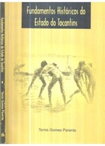

O livro Fundamentos Históricos do Tocantins, da professora Temis Gomes Parente, é uma obra essencial para compreender o processo de criação do Estado e a formação histórica da região. A autora resgata aspectos socioeconômicos desde o século XVIII, a partir de ampla pesquisa documental, estimulando novas investigações e valorizando a memória coletiva do povo tocantinense. No primeiro capítulo, analisa-se a Capitania e sua relação com a metrópole no contexto colonial. O segundo capítulo aborda o processo de formação da Capitania de Goiás, com destaque para a região Norte. O terceiro discute a organização socioeconômica dos arraiais goianos e as formas de produção predominantes. Já o quarto capítulo examina a crise econômica resultante da decadência da mineração e as tentativas de superá-la, apoiando-se em registros e memórias da época.